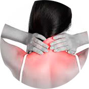
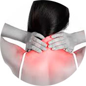

Pourquoi on a mal aux articulations?
Dans votre cas, la cause peut être:

la vie sédentaire
la mauvaise alimentation
l’adipose
la posture
l'impact de la mauvaise écologie
l’hérédité
les sports actifs
la grossesse
Si vous avez au moins un point de ce list, il est temps de réfléchir sérieusement à votre santé et à l'avenir!
C’est la douleur dans les articulations qui fait couvrir toutes les couleurs de la vie: pas d'intérêt ni du travail, ni de la propre apparence, ni de la famille, ni de repos...
 
